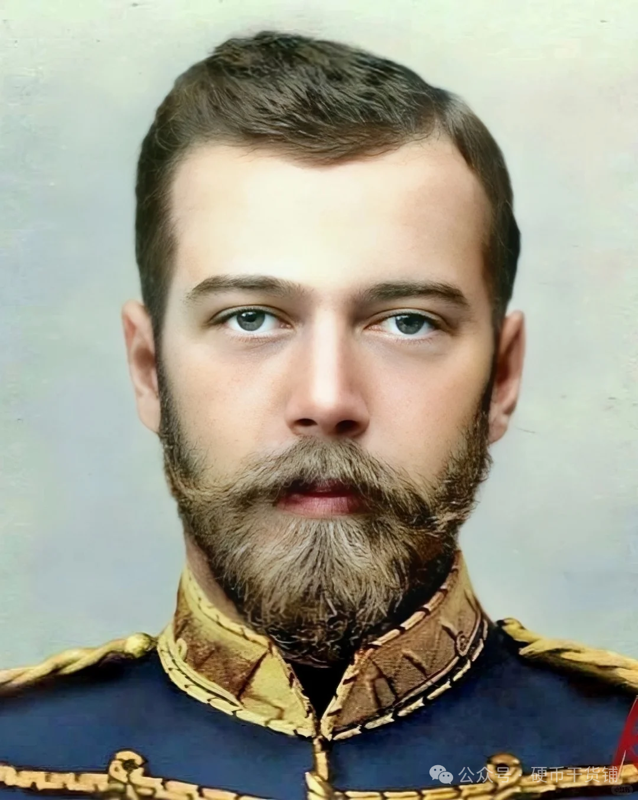
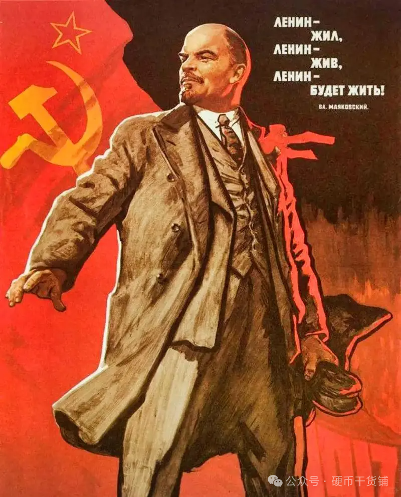

1917：两场革命，一个变局
文字与图片版权归各自权利人所有。 查看公众号原文 ↗
1917年，注定是改写世界历史进程的关键一年。彼时，第一次世界大战的战火已绵延三载，欧洲大陆生灵涂炭，而身处战争旋涡中心的俄国，正被内忧外患裹挟至崩溃边缘。这一年，两场惊心动魄的革命相继在俄国爆发——二月革命推翻沙皇专制的腐朽统治，将共和的曙光带给俄国人民；十月革命则颠覆资产阶级临时政府，建立起世界上第一个社会主义国家。一整年的风云激荡，不仅终结了俄国数百年的封建帝制，更重塑了全球政治格局，开启了人类历史的全新纪元，一个前所未有的时代变局就此拉开序幕。
二月革命：沙皇退位，共和降临1917年的俄国，早已不是那个看似庞大的“沙皇帝国”，而是一座濒临喷发的火山。第一次世界大战中，沙皇尼古拉二世执意将俄国拖入战争泥潭，前线士兵装备简陋、补给匮乏，数百万青年葬身战场，无数家庭支离破碎；后方则物价飞涨、粮食短缺，工厂倒闭、工人失业，广大农民被苛捐杂税和粮食征集制压榨得喘不过气，底层民众的不满情绪如同积压的火山灰，只需一丝火星便会喷涌而出。

末代沙皇——尼古拉二世
2月23日（俄历2月10日），这场风暴如期而至。彼得格勒（今圣彼得堡）的女工们率先走上街头，她们手持面包篮，高呼“面包！和平！土地！”的口号，抗议粮食短缺和战争的残酷。随后，工人、学生、士兵纷纷响应，游行示威迅速席卷全城，抗议浪潮愈演愈烈。起初，沙皇尼古拉二世下令军队镇压，试图用暴力平息叛乱，但早已对沙皇统治失望透顶的士兵们，不愿再向同胞开枪，纷纷倒戈相向，加入到革命队伍中来。
革命的火焰迅速蔓延至俄国各地，沙皇的统治机器彻底瘫痪。3月2日（俄历2月19日），走投无路的尼古拉二世被迫签署退位诏书，宣告统治俄国304年的罗曼诺夫王朝覆灭。二月革命以迅雷不及掩耳之势取得胜利，俄国结束了数百年的封建专制统治，成立了资产阶级临时政府，同时诞生了代表工农利益的工兵代表苏维埃，共和的旗帜首次在俄国大地上升起，看似为俄国带来了新生的希望。
临时政府为何撑不住：战争、土地、饥饿三大死结二月革命的胜利，虽然推翻了沙皇专制，但并未真正解决俄国面临的核心危机。资产阶级临时政府上台后，非但没有回应民众最迫切的诉求，反而延续了沙皇政府的错误政策，最终被战争、土地、饥饿三大死结牢牢束缚，走向覆灭只是时间问题。
第一个死结是战争。临时政府不顾俄国人民渴望和平的迫切愿望，坚持继续参加第一次世界大战，提出“战争直到胜利结束”的口号。此举不仅消耗了俄国本就濒临枯竭的国力，更让前线士兵的伤亡人数持续增加，士兵们的不满情绪日益高涨，纷纷拒绝作战，甚至发动兵变。战争的持续，让临时政府失去了军队的支持，也彻底耗尽了民众的信任。
第二个死结是土地。土地问题是俄国近代以来最核心的社会矛盾之一，广大农民长期被地主阶级压迫，没有自己的土地，只能依附地主生存，生活困苦不堪。二月革命后，农民们迫切希望临时政府能够推行土地改革，没收地主的土地分配给农民，但临时政府代表的是资产阶级和地主阶级的利益，坚决拒绝了农民的诉求，甚至派兵镇压农民的土地起义。土地问题得不到解决，让临时政府失去了占俄国人口绝大多数的农民的支持，成为孤家寡人。
第三个死结是饥饿。由于战争的持续，俄国的农业生产遭到严重破坏，粮食产量大幅下降，而临时政府为了维持战争，不断向农民征集粮食，导致后方粮食短缺问题日益严重，物价飞涨，普通民众连基本的温饱都无法保障，饿殍遍野的场景在俄国各地频频出现。饥饿的折磨，让民众对临时政府的不满达到了顶点，越来越多的人开始支持主张结束战争、解决土地和饥饿问题的布尔什维克党。
三大死结相互交织、层层叠加，让临时政府的统治岌岌可危，它就像一座摇摇欲坠的大厦，只需轻轻一推，便会彻底崩塌。而此时，一个关键人物的归来，为俄国革命指明了方向，也彻底改写了俄国的命运。
列宁归来：《四月提纲》如何改写俄国命运在俄国革命陷入迷茫之际，流亡国外长达10年的列宁，在德国的帮助下，于1917年4月16日（俄历4月3日）乘坐密封列车抵达彼得格勒。当列宁出现在彼得格勒火车站时，成千上万的工人和士兵涌向车站，高呼“列宁万岁！”“社会主义万岁！”的口号，热烈欢迎列宁的归来。列宁的归来，如同黑暗中的一束光，为迷茫中的俄国革命照亮了前进的道路。

抵达彼得格勒后，列宁立即投入到革命工作中，他深入工人、士兵和农民中间，倾听民众的诉求，分析俄国革命的形势，于4月17日（俄历4月4日）在布尔什维克党的会议上发表了著名的《四月提纲》（又称《论无产阶级在这次革命中的任务》）。这篇提纲篇幅不长，却字字千钧，精准把握了俄国革命的本质，彻底颠覆了人们对革命的认知，为俄国革命指明了正确的方向，也改写了俄国的命运。
《四月提纲》的核心思想，主要包含三个关键层面，彻底打破了当时的革命困局。其一，明确指出俄国革命的性质已经发生转变，二月革命是资产阶级民主革命，而当前的革命任务，是要从资产阶级民主革命过渡到无产阶级社会主义革命，推翻资产阶级临时政府，建立无产阶级专政。这一论断，打破了当时人们认为“俄国革命只能停留在资产阶级民主革命阶段”的固有认知，为布尔什维克党制定了正确的革命策略。
其二，针对性地回应了民众最迫切的诉求，提出了“全部政权归苏维埃”“停止战争”“没收地主土地分配给农民”“实行八小时工作制”等口号。这些口号精准击中了临时政府的软肋，也契合了工人、农民和士兵的核心利益，迅速得到了广大民众的支持和响应，让布尔什维克党的影响力迅速扩大，为后续的革命胜利奠定了坚实的群众基础。
其三，明确了革命的步骤和方法，主张通过和平方式实现政权过渡，反对立即发动武装起义。当时，临时政府的统治虽然摇摇欲坠，但仍掌握着一定的武装力量，而布尔什维克党的武装力量还比较薄弱，和平过渡的主张，既避免了不必要的流血牺牲，也为布尔什维克党争取了时间，得以积蓄力量、发动群众。
《四月提纲》的发表，如同一声惊雷，震撼了整个俄国。它彻底厘清了俄国革命的方向和任务，团结了广大工农群众，让布尔什维克党迅速成为俄国革命的领导核心。在《四月提纲》的指引下，俄国人民纷纷觉醒，越来越多的人加入到布尔什维克党的行列中来，为十月革命的胜利奠定了坚实的基础，也彻底改写了俄国的历史命运——从一个腐朽的封建帝国，逐步转变为世界上第一个社会主义国家，进而影响了整个20世纪的全球格局。
1917年的两场革命，是俄国人民反抗压迫、追求解放的正义斗争，也是时代发展的必然产物。二月革命打破了封建枷锁，带来了共和的曙光；十月革命则颠覆了资产阶级统治，开启了社会主义的新纪元。而列宁的归来和《四月提纲》的发表，无疑是这场变局中最关键的转折点，它让俄国革命摆脱了迷茫，找到了正确的方向，也让一个全新的俄国，在世界历史的舞台上悄然崛起。
下一期，我们一起走进十月革命，看看这场被称为“一声炮响”的革命，到底是不是“轻松夺权”，冬宫之下，到底有没有激烈的战斗，苏维埃政权的建立，又经历了怎样的波折。